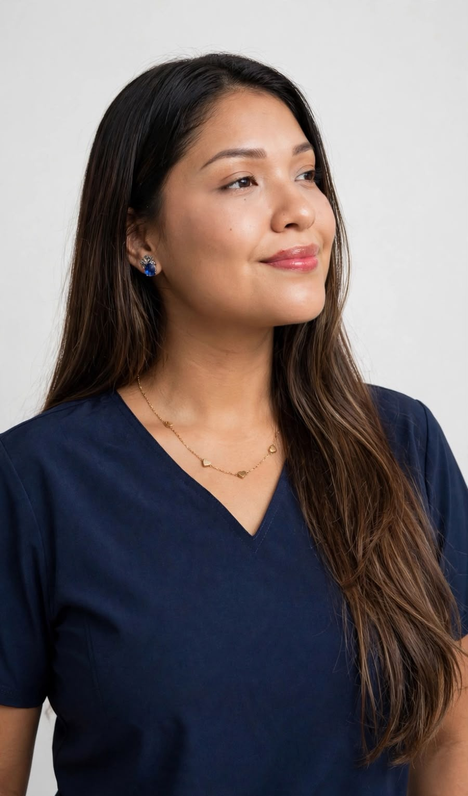

Médico Cirujano · Auditora Médica (EPG UPC) · Soporte Vital Avanzado
Médica con sólida formación hospitalaria en áreas críticas y quirúrgicas, egresada de la Universidad Peruana de Ciencias Aplicadas (UPC). Especial interés y proyección hacia la Cirugía Oncológica, con diplomado de postgrado en Auditoría Médica y Salud Ocupacional. Rigor científico, empatía activa y alto desempeño bajo presión.
Soy la Dra. Danna Marjorie Tupac Rojas, médica cirujana con vocación de servicio, criterio clínico basado en evidencia y marcado interés por el desarrollo profesional en Cirugía Oncológica.
Graduada de la Universidad Peruana de Ciencias Aplicadas (UPC), he consolidado mi experiencia clínica en hospitales de referencia nacional como el Hospital de Emergencias de Villa El Salvador (HEVES III-1), el Hospital de Emergencias José Casimiro Ulloa (referente en trauma) y el Hospital de Emergencia Grau (EsSalud).
Cuento con un Diplomado de Postgrado en Auditoría Médica Basada en la Evidencia (EPG UPC) con 582 horas lectivas y 36 créditos académicos, abarcando auditoría clínica, laboral y salud ocupacional. Además, estoy acreditada con la Tríada de Emergencias y Soporte Vital: ATLS, ACLS y BLS.
Experiencia probada en manejo de emergencias, shock trauma, asistencia quirúrgica y evolución postoperatoria.
Compromiso activo con el paciente vulnerable; voluntaria en albergue de apoyo al INEN ("Casita Fuente de Vida") y campañas comunitarias de prevención de salud.
Especialista de postgrado en revisión de calidad documental, pertinencia médica, historias clínicas y salud ocupacional.

La medicina de excelencia requiere tanto de rigor científico y disciplina, como de un profundo compromiso humano hacia el paciente.
— Dra. Danna Tupac RojasAsistencia en procedimientos quirúrgicos, curaciones complejas, manejo de drenajes y seguimiento postoperatorio hospitalario. Proyección vocacional en Cirugía Oncológica.
Quirófano & HospitalizaciónManejo de pacientes críticos con acreditación internacional completa: ATLS (Trauma), ACLS (Cardiovascular Avanzado) y BLS (Soporte Básico) por ICEDEP y UNMSM.
ATLS · ACLS · BLSEspecialista por la Escuela de Postgrado UPC (582 hrs, 36 créditos). Evaluación de historias clínicas, pertinencia médica, gestión de calidad sanitaria y salud laboral preventiva.
EPG UPC CertificadaAtención integral en hospitalización, emergencia pediátrica y medicina interna. Liderazgo en campañas de salud, tamizaje de anemia y prevención de enfermedades no transmisibles.
Atención IntegralCEMUNE · Centro de Municiones del Ejército Peruano
Atención médica asistencial y preventiva para el personal militar y civil de la institución. Gestión de salud laboral, urgencias y programas preventivos.
Escuela de Postgrado UPC (EPG)
Aprobación con honores del programa de 582 horas lectivas y 36 créditos académicos. Especialización en Auditoría Clínica, Ámbito Laboral y Salud Ocupacional.
Hospital de Emergencias de Villa El Salvador (HEVES) III-1
Rotaciones hospitalarias de alta demanda en Cirugía General (asistencia quirúrgica y postoperatorio), Pediatría y Neonatología, Medicina Interna y Ginecología y Obstetricia.
Red Hospitalaria de Lima
Universidad Peruana de Ciencias Aplicadas (UPC)
Colegiada en el Colegio Médico del Perú (CMP 111905). Título profesional expedido el 04 de marzo de 2025.
Certificaciones Vigentes
Especialistas y directores de servicio que respaldan mi desempeño ético y clínico
Médico Especialista en Cirugía General
Hospital de Emergencias de Villa El Salvador (HEVES III-1)
Referencia QuirúrgicaMédico Especialista en Cirugía General
Hospital de Emergencias de Villa El Salvador (HEVES III-1)
Referencia QuirúrgicaEmergenciólogo · Supervisor de Rotación
Hospital de Emergencias José Casimiro Ulloa
Referencia Shock Trauma* Por protocolo de privacidad profesional, los contactos telefónicos directos y cartas de recomendación están disponibles previa solicitud de comités evaluadores institucionales.
Disponible para oportunidades laborales en instituciones de salud, equipos quirúrgicos, consultorías de auditoría médica y atención clínica profesional.